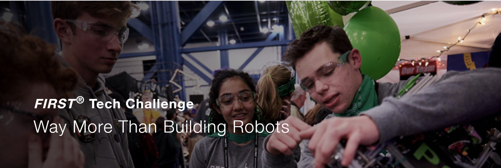

Everstem Grants
A non-profit organization run by students for students
Everstem is a 501(c3) non-profit organization based in Washington State, USA. We provide grants for new FIRST Lego League (FLL) and FIRST Tech Challenge (FTC) teams in Washington state. Everstem also provides mentorships to help establish new teams in FIRST programs.
FIRST Lego League (FLL)
Grades K-8

FIRST LEGO League introduces science, technology, engineering and math (STEM) to children through fun, exciting hands-on learning. Students gain real-world problem-solving experiences through a guided, global robotics program, helping today’s students and teachers build a better future together. FIRST LEGO League inspires youth to experiment and grow their critical thinking, coding and design skills through hands-on STEM learning and robotics.
FIRST Tech Challenge (FTC)
Grades 7-12

FIRST Tech Challenge teams (up to 15 team members, ) are challenged to design, build, program, and operate robots to compete in a head-to-head challenge in an alliance format. Guided by adult coaches and mentors, students develop STEM skills and practice engineering principles, while realizing the value of hard work, innovation, and working as a team.